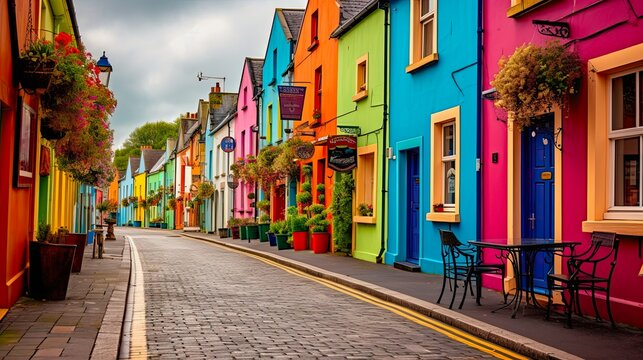
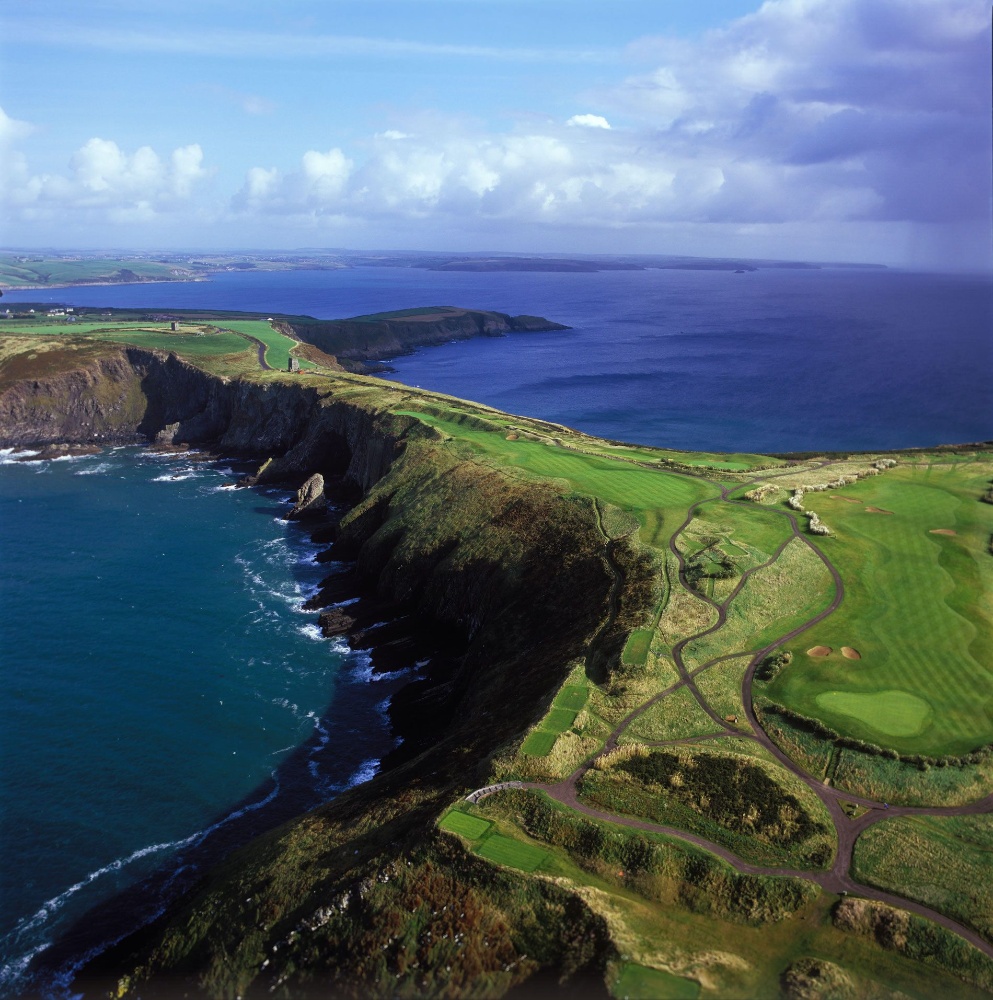

Kinsale o Porto


Kinsale ( / k ɪ n ˈ s eɪ l / kin -SAYL ; irlandês : Cionn tSáile , que significa 'cabeça do mannion' [2] ) é um porto histórico e uma cidade pesqueira no condado de Cork , na Irlanda . Localizado a aproximadamente 25 km (16 milhas) ao sul de Cork City , na costa sudeste, perto de Old Head of Kinsale , fica na foz do rio Bandon e tem uma população de 5.281 (de acordo com o censo de 2016 ) [1] que aumenta no verão, quando o turismo atinge o pico.
Kinsale é um destino de férias para turistas irlandeses e estrangeiros. [3] A cidade é conhecida por seus restaurantes, [4] incluindo o restaurante Bastion , com estrela Michelin , [5] e realiza vários festivais anuais de comida gourmet. [6]
Como uma cidade portuária historicamente estratégica, os edifícios notáveis de Kinsale incluem o Castelo de Desmond (associado aos Condes de Desmond e também conhecido como Prisão Francesa) de c. 1500 , o forte bastião pentagonal do século XVII de James Fort , na península de Castlepark , e Charles Fort , um forte estelar parcialmente restaurado de 1677, nas proximidades de Summercove. [7] Outros edifícios históricos incluem a Igreja de St Multose ( Igreja da Irlanda ) de 1190, São João Batista ( católica ) de 1839, e a Market House de c. 1600 . [7] Kinsale está no distrito eleitoral de Cork South-West ( Dáil Éireann ), que tem três assentos.